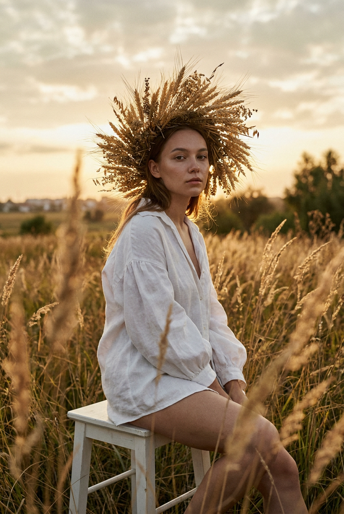
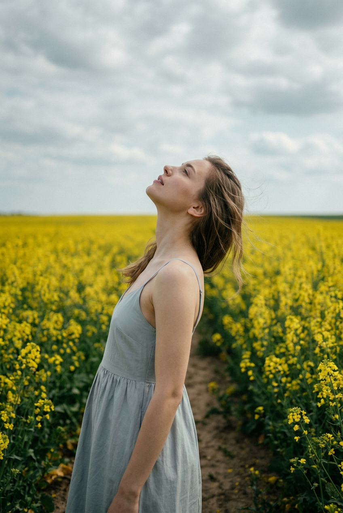
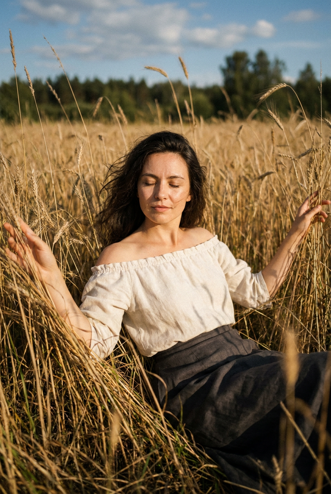
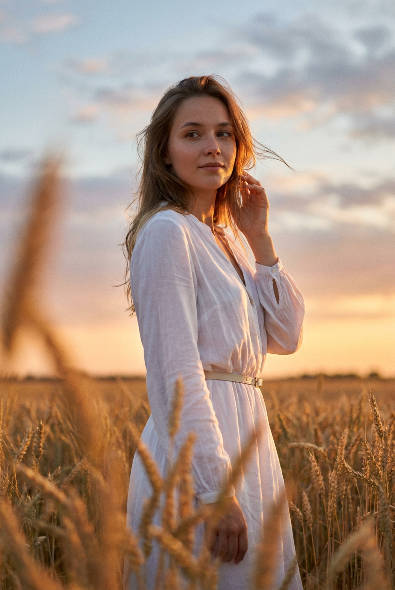
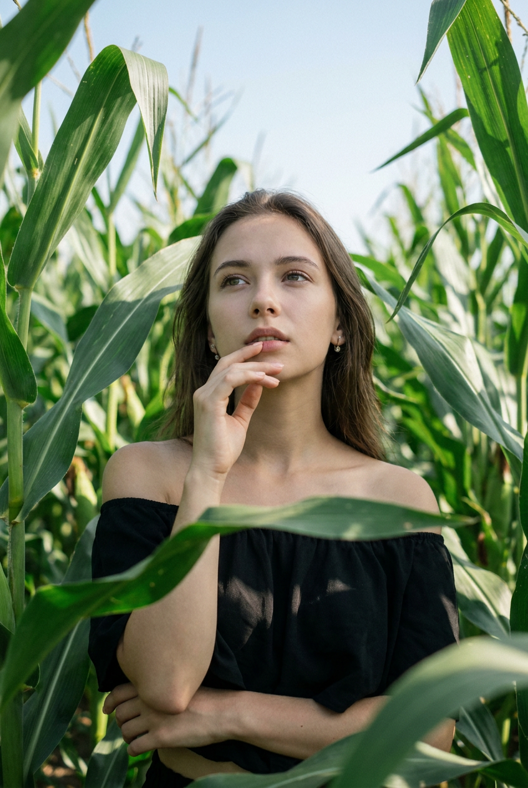
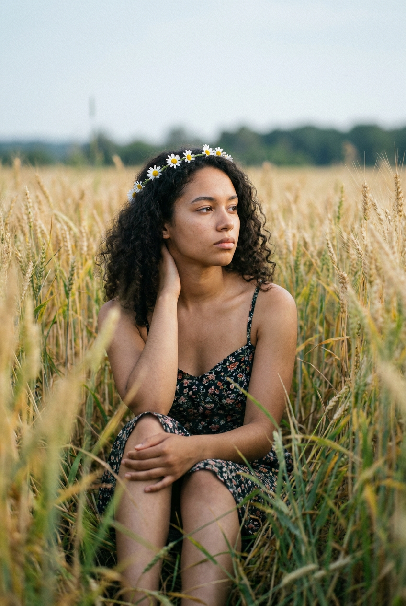
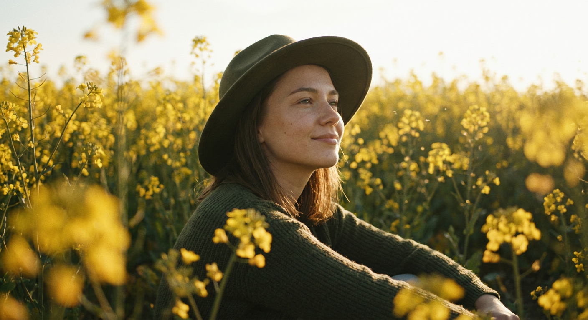
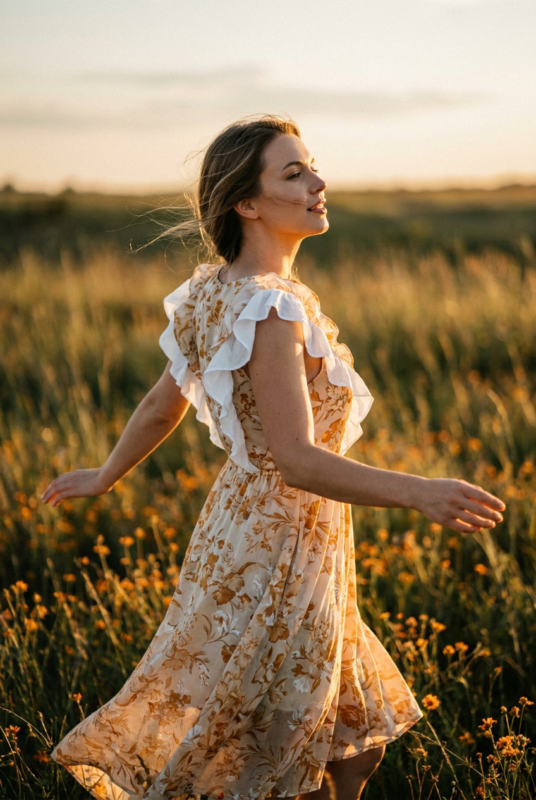
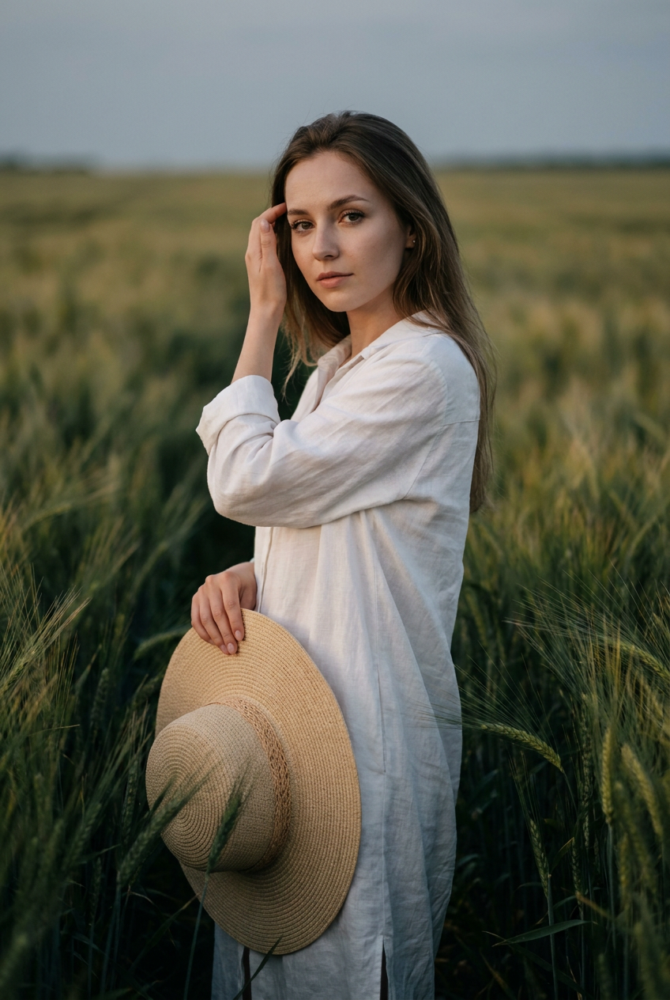
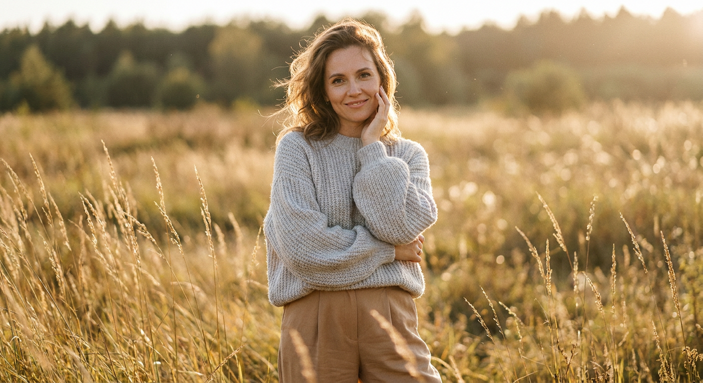

ИИ-фотосессия в поле: 10 промптов для нейросети

Обычная съёмка в поле требует подходящей погоды, нужного сезона, одежды, фотографа и удачного света. Генерация помогает собрать такой кадр за несколько попыток: выбрать локацию, задать настроение и сохранить узнаваемую внешность по референсу.
В подборке — десять сценариев для вертикальной фотосессии: от портрета среди сухих колосьев до прогулки в рапсовом поле, отдыха в кукурузе и мечтательной сцены на закате. Промпты можно использовать как готовую основу и адаптировать под свой образ.
Как сгенерировать такое фото: пошагово
Нужен снимок анфас при ровном свете, лицо в кадре целиком, без тёмных очков и головных уборов. Разрешение от 1000 пикселей по короткой стороне. Чем чётче исходник, тем точнее модель повторит черты.
Выберите сценарий ниже и нажмите «Копировать» — текст уйдёт в буфер целиком, вместе с командой сохранения внешности. Эта команда стоит первой строкой и отвечает за то, чтобы на выходе было ваше лицо, а не случайное.
Кнопка «Сгенерировать» рядом с каждым промптом открывает модель в новой вкладке. Nano Banana Pro работает с референсом лица — в отличие от моделей, которые генерируют портрет с нуля и узнаваемость теряют.
Промпт — в поле ввода, портрет — через загрузку референса. Порядок значения не имеет, но без референса команда сохранения внешности работать не будет: модели нечего сохранять.
Для сторис и ленты берите 9:16, для превью и обложек — 4:3. Первый результат редко идеален: если поза или свет ушли не туда, поправьте соответствующую часть промпта и запустите заново. Обычно хватает двух-трёх итераций.
10 промптов для генерации
1. Венок среди сухих колосьев
Строго сохранить внешность по загруженному референсу: черты лица, пропорции, мимику и текстуру кожи без изменений. Фотореалистичный кинематографичный вертикальный кадр девушки, сидящей на полностью видимом белом табурете среди высокой сухой травы в поле: пшеница, овсяница и луговые злаки. Девушка расположена в центре, табурет — в нижней трети композиции. Плотные колышущиеся стебли окружают фигуру со всех сторон; трава частично перекрывает силуэт на переднем плане и у боковых границ, создавая выраженную глубину. Главный акцент — крупный объёмный венок-корона из сухих колосьев, соломы, пшеничных стеблей, метёлок и высохших трав. Венок высокий, слегка растрёпанный, с торчащими вверх кончиками и хорошо заметной фактурой. Мягкий естественный дневной свет, натуральная кожа, реалистичные детали растений, малая глубина резкости. Вертикальный формат, девушка и венок в резкости, передний план с лёгким размытием.
2. Взгляд над полем рапса

Строго сохранить внешность по загруженному референсу: черты лица, пропорции, мимику и текстуру кожи без изменений. Кинематографичная фотореалистичная фотография в вертикальном формате: девушка стоит на узкой земляной дорожке, прорезающей поле ярко-жёлтого рапса. Растения заполняют нижнюю и среднюю части изображения, а широкая линия горизонта уходит вдаль; большую часть верхнего пространства занимает светлое небо с облаками. Камера находится на уровне глаз, план средний или дальний, с ощущением простора. Девушка развёрнута боком или в пол-оборота, запрокинула голову и слегка подняла лицо к небу, будто любуется облаками. Выражение спокойное и расслабленное, губы нейтральные или чуть приоткрытые, руки свободно опущены вдоль тела, одна кисть может быть немного согнута. Тёплый естественный свет, реалистичная текстура цветов, лёгкая воздушная дымка вдали, натуральные пропорции тела, мягкое размытие дальнего плана.
3. Объятие высокой травой

Строго сохранить внешность по загруженному референсу: черты лица, пропорции, мимику и текстуру кожи без изменений. Фотореалистичный вертикальный кадр в тёплом дневном свете: девушка лежит или полусидит в высокой траве, похожей на густые злаки, ячмень или пшеницу. Передний план полностью занят тонкими стеблями и колосьями, часть растений проходит перед лицом и по телу, частично скрывая силуэт и создавая эффект естественной рамки. Голова слегка приподнята, глаза закрыты или расслабленно полу-сомкнуты, выражение умиротворённое. Руки разведены в стороны и вытянуты, ладони касаются колосьев или мягко раздвигают траву, будто девушка обнимает поле. Несколько стеблей находятся особенно близко к объективу и размыты. Камера расположена низко, фокус на лице и руках, фон растворяется в мягком боке. Натуральная цветопередача, реалистичная фактура сухих растений, мягкие солнечные блики, кинематографичная глубина резкости.
4. Закат в пшеничном поле

Строго сохранить внешность по загруженному референсу: черты лица, пропорции, мимику и текстуру кожи без изменений. Фотореалистичная кинематографичная сцена в вертикальной композиции: молодая девушка стоит среди зрелой золотистой пшеницы во время заката. Постройте изображение в три слоя: на переднем плане крупные подсвеченные колосья, в средней зоне — девушка, на дальнем плане — линия горизонта и небо с облаками. Камера на уровне глаз. Девушка развёрнута боком или в пол-оборота к объективу, одной рукой поднимает волосы у головы, вторая свободно опущена либо слегка согнута возле талии. Корпус немного прогнут назад, голова повернута в сторону, взгляд спокойный и задумчивый. Несколько прядей выбиваются из причёски и развеваются ветром. Золотой контровой свет очерчивает волосы и плечи, колосья светятся по краям, кожа выглядит естественно. Реалистичная текстура поля, мягкое размытие переднего плана, тёплая палитра golden hour.
5. Тихий портрет в кукурузе

Строго сохранить внешность по загруженному референсу: черты лица, пропорции, мимику и текстуру кожи без изменений. Кинематографичный фотореалистичный вертикальный портрет девушки в кукурузном поле при дневном солнце. Средний или крупный план: в кадре голова, плечи и верхняя часть торса, фигура расположена по центру чуть ниже середины. Высокие кукурузные стебли и длинные листья окружают героиню со всех сторон, частично закрывают силуэт и формируют плотную природную рамку. Девушка стоит или полулежит в гуще растений, слегка запрокидывает голову и смотрит вверх-влево, в сторону неба. Выражение задумчивое и спокойное, губы расслаблены. Одна рука поднята к лицу, пальцы легко касаются губ или подбородка, создавая жест размышления; вторая рука опущена и едва заметна у талии внизу кадра. Дневной солнечный свет пробивается между листьями, оставляя мягкие блики и тени. Реалистичная зелень, натуральная кожа, малая глубина резкости.
6. Отдых среди золотых трав

Строго сохранить внешность по загруженному референсу: черты лица, пропорции, мимику и текстуру кожи без изменений. Фотореалистичный вертикальный кинематографичный кадр девушки, сидящей на земле в поле с золотистой пшеницей, высокими колосьями и зелёными травами. Средний план с акцентом на лице и верхней части тела; героиня находится ближе к центру, но частично погружена в растения переднего плана. Камера установлена на уровне глаз или немного ниже, чтобы создать впечатление прогулки среди травы и естественного обрамления. Девушка сидит с поджатыми согнутыми ногами, корпус слегка развёрнут к объективу. Одна рука заведена за голову, пальцы касаются затылка или темени, локоть направлен назад. Вторая ладонь расслабленно лежит на коленях или поверх согнутых ног. На лице мягкое спокойное выражение, взгляд направлен в сторону камеры или чуть мимо неё. Тёплый рассеянный дневной свет, натуральные цвета, резкость на лице, размытые колосья в переднем плане и мягкий фон.
7. Жёлтый рапс под солнцем

Строго сохранить внешность по загруженному референсу: черты лица, пропорции, мимику и текстуру кожи без изменений. Фотореалистичная вертикальная сцена в поле рапса, где тысячи жёлтых цветов уходят к горизонту. Свет — закатный или ранний дневной, небо яркое, слегка пересвеченное солнечным сиянием. Девушка расположена ближе к нижней трети кадра и показана в полупрофиль; она лежит или сидит низко среди растений, поэтому жёлтые стебли и цветы частично скрывают фигуру. Голова немного приподнята и повернута в сторону солнца, взгляд направлен вверх; лицо расслабленное, с мягкой улыбкой или нейтральным выражением. Волосы частично выглядывают из-под тёмной оливково-зелёной шляпки с полями, мягкой кепки или капора. На девушке тёмно-зелёный свитер или куртка. Используйте низкую точку съёмки, золотистую засветку по краям, лёгкое свечение в воздухе и мягкое размытие близких цветков. Настроение нежное, тихое, летнее.
8. Платье на ветру

Строго сохранить внешность по загруженному референсу: черты лица, пропорции, мимику и текстуру кожи без изменений. Фотореалистичная кинематографичная вертикальная сцена на закате среди высокой травы и диких цветов. Девушка находится в правой части кадра и повернута профилем или в пол-оборота к дальнему горизонту. Руки вытянуты немного в стороны: одна ладонь смотрит вниз, другая раскрыта, жест напоминает лёгкий поворот во время прогулки или танца. Голова чуть откинута назад, лицо показано сбоку, выражение мечтательное и спокойное, возможна едва заметная улыбка и слегка приоткрытые губы. Ветер развевает отдельные пряди волос. На девушке светлое платье или сарафан с тёплым цветочным принтом: охристо-песочная основа и мелкие цветы; на плечах белые объёмные рюши, крылышки или пышные рукава. Золотой час, тёплая подсветка по контуру, разноцветные полевые растения на переднем плане, мягкое боке и просторный горизонт. Вертикальная композиция, естественная динамика ткани.
9. Соломенная шляпа в ячмене

Строго сохранить внешность по загруженному референсу: черты лица, пропорции, мимику и текстуру кожи без изменений. Фотореалистичный вертикальный снимок девушки в густом ячменном поле. Вокруг тёмно-зелёные и зеленовато-жёлтые колосья, поле постепенно уходит к горизонту, дальний фон слегка размывается. Камера стоит на уровне глаз, средний план — героиня видна от талии или середины бедра до головы и занимает центральную часть кадра. Девушка стоит либо слегка приседает между растениями. В одной руке она держит соломенную шляпу с широкими полями; шляпа заметна в левой части изображения. Другую руку девушка поднимает к волосам или виску, будто поправляет прядь. Голова повернута в пол-оборота к камере, взгляд спокойный, немного задумчивый, губы расслаблены. Мягкий естественный свет, лёгкий ветер в волосах, детальная фактура ячменя, натуральная кожа и реалистичная цветопередача. Передние колосья можно слегка размыть для эффекта глубины.
10. Нежный портрет на закате

Строго сохранить внешность по загруженному референсу: черты лица, пропорции, мимику и текстуру кожи без изменений. Фотореалистичный портрет девушки в поле сухих золотистых трав и колосьев на закате. Вертикальный кадр от груди до талии, героиня стоит в центре и слегка развёрнута боком, а голову поворачивает к объективу. Выражение тёплое и спокойное, на губах лёгкая улыбка. Одна ладонь поднята к губам или щеке, создавая нежный романтичный жест. На девушке мягкий светло-серый вязаный свитер с объёмными рукавами, ниже — одежда бежево-карамельных оттенков: свободная юбка или брюки. Волосы немного развеваются от ветра. Высокие сухие стебли окружают фигуру, несколько растений на переднем плане находятся вне фокуса и образуют многослойную рамку. Позади — поле, линия деревьев и тёплое небо golden hour. Мягкий контровой свет подсвечивает волосы и края одежды, лицо остаётся хорошо освещённым, фон уходит в кремовое боке.
Что важно учесть в этом стиле
Полевой кадр держится на глубине: размытые стебли впереди, героиня в средней зоне и горизонт на заднем плане. Если описать только девушку и фон, изображение часто получится плоским. Добавляйте точку съёмки, вертикальный формат, уровень камеры и способ, которым трава перекрывает силуэт.
Свет лучше связывать с конкретным временем суток. Для заката подойдут золотая подсветка по краям, длинные тени и лёгкая засветка неба. Дневной вариант требует мягких солнечных пятен между листьями. Чтобы лицо не потерялось среди растений, отдельно указывайте фокус на глазах, естественную кожу и умеренное размытие переднего плана.
Идеи для вариаций
- Замените пшеницу на лаванду, рожь, люпины или разнотравье.
- Добавьте после дождя влажные стебли, низкие облака и отражения света на каплях.
- Попросите камеру снимать с уровня земли, чтобы колосья выглядели выше героини.
- Смените настроение: вместо задумчивости задайте смех, бег по тропинке или поворот навстречу ветру.
- Попробуйте плёночную цветопередачу, лёгкое зерно, объектив 85 мм и диафрагму f/1.8 для портрета.
- Для более широкого пейзажа укажите объектив 35 мм, сохраните вертикальный кадр 4:5 и оставьте больше неба.
Как собрать свой промпт
Начните с формата и типа кадра: например, «вертикальный портрет 4:5, средний план, камера на уровне глаз». Затем опишите локацию, время суток, положение тела, направление взгляда и жест рук. После этого добавьте одежду, главный визуальный акцент и детали окружения — цветы, колосья, дорожку, горизонт или ветер.
В конце задайте фотографические параметры: мягкий контровой свет, фокус на лице, малая глубина резкости, размытый передний план, реалистичная фактура растений. Для стабильного результата меняйте за раз только один параметр и делайте 4–8 генераций, сравнивая позу, лицо и композицию.
Ошибки, из-за которых кадр не получается
- Слишком много объектов. Венок, шляпа, букет, корзина и сложная одежда одновременно перегружают сцену. Оставьте один главный акцент.
- Не задан план съёмки. Без указания крупного, среднего или дальнего плана нейросеть может обрезать руки, ноги или предметы.
- Противоречивый свет. Закатное солнце, жёсткая полуденная тень и холодный пасмурный фон в одном описании дают неестественный результат.
- Слишком расплывчатая поза. Опишите положение локтей, ладоней, головы и направление взгляда, особенно для сложных жестов.
- Растения закрывают лицо. Уточните, что стебли перекрывают тело частично, а глаза и ключевые черты остаются в резкости.
- Нестабильный референс. Сильно изменённый ракурс или закрытое волосами лицо могут ухудшить сходство. Используйте чёткое фото анфас или лёгкий полупрофиль.
Частые вопросы
Как сделать такое ИИ-фото бесплатно?
Можно попробовать Kandinsky и Шедеврум: у них есть бесплатная генерация, но качество, очередь и число доступных попыток могут меняться. Krea AI и Arena.ai удобны для экспериментов и сравнения вариантов, однако бесплатный режим обычно ограничивает скорость, разрешение или количество генераций. Работа с референсом поддерживается не одинаково: где-то можно загрузить изображение напрямую, а где-то доступны только текстовые подсказки или слабое влияние исходного фото. Для точного сходства лица понадобится несколько итераций и аккуратный референс.
Как сохранить лицо по фотографии?
Загрузите чёткий референс без сильных фильтров, очков и перекрывающих лицо волос. В промпте укажите, что индивидуальные черты, пропорции и естественная мимика должны сохраняться, но не перегружайте описание повторениями. Если лицо каждый раз меняется, уменьшите сложность позы, уберите сильный профиль и сначала добейтесь удачного портрета, а затем добавляйте поле, одежду и аксессуары.
Какой формат выбрать для фотосессии в поле?
Для публикаций в ленте удобно использовать вертикальное соотношение 4:5, а для сторис и коротких видео — 9:16. В промпте заранее укажите ориентацию, план и положение героини в кадре. Для пейзажной сцены подойдёт 35 мм, для портрета с мягким боке — условный объектив 85 мм и диафрагма около f/1.8.
Почему нейросеть искажает руки и одежду?
Сложные жесты, перекрытые травой ладони и многослойная одежда требуют больше вычислений и часто дают артефакты. Упростите позу, опишите каждую руку отдельно, укажите видимую часть тела и попросите естественную анатомию. Сначала сгенерируйте сцену без аксессуаров, затем добавляйте венок, шляпу или рюши через редактирование.